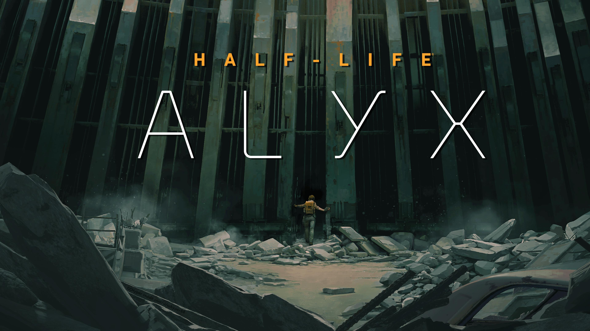

VR is back baby! It's good again! AWOOOOO!
20/10/2026
In September, I won the metaphorical lottery, and got one of the first Steam Frames that rolled off the production line. This... is my story.
OK before we start I'm sorry that it's been 10 months without a post. I picked up a pen and started drawing instead and I blinked and it was October. I've been really enjoying drawing! But it's been something I've done off-blog so it's been a bit quiet here. Sorry. I've been wanting to talk about VR for a while though, and I have finally had a spare minute to blog, so hello again! You'll definitely see me again this year, I liked the Of The Year blogs I did in 2025 and I'll be doing similar this year too.
I've been on the VR train for quite a long time. I got bored easily at university, and would mooch around shopping centres a lot. One spring afternoon I wandered into my local Currys PC World and, for some reason (which I still have not figured out to this day) that small Currys in my tiny town had a VR showcase on one week with HTC and Valve. And it was there I used the HTC Vive for the first time.
Long time readers will have picked up that I've kind of always been 'wired in' to the video game industry. I read a lot of NGC magazine as a kid and that informed a lot of my writing style and my interest in less mainstream games and hardware. As I got older and magazines died, that need to read video game journalism graduated to Kotaku, which had a similar voice to NGC - independent, interested in the 'otaku' of video games and updated daily (which at the time was truly novel for me. Video game news more than once a month! Wowie zowie!).
Fast forward a few years and it was on Kotaku I first read about the Oculus Rift, its Kickstarter campaign, and the DK1. I was just out of school at this point, so of course did not have £250 to drop on a dev kit, but I was enamoured by the thing. Real VR! Around a year later I'd be lucky enough to try one of those dev kits at GameCity (rip the greatest games show in the universe) with a very early version of Pixel Ripped.
The DK1 sucked. It had approximately four pixels per eye and appalling tracking, and as such I felt extremely ill after taking it off my head. Which is to be expected, of course, it was a development kit, not a consumer product, but holy shit! It was real! VR was real and it worked.
Then I went to university again, broke up with my girlfriend, started transitioning and got very depressed. But 3 short years later I found myself in that Currys, staring at an HTC Vive demo area after work, with no queue. So I donned the headset once again.
The HTC Vive did not suck. Well, ok, comparative to what is available today it does, but it did not suck then. The resolution was decent enough, considering, and tracking was pinpoint accurate (still is! Lighthouse tracking is the gold standard, still). And this was demoed at that Currys with software called Google Tilt Brush, not a game. (Seems like it has now been delisted from Steam's storefront, unfortunately.) Tilt Brush is, in effect, a 3D modelling package. It allows you to draw and paint with six degrees of freedom in 3d space. And it completely blew my mind. The wands the HTC guy handed to me to paint were tracked perfectly, and I could draw a simple scene of sky and some clouds in 3D, with real depth to everything. It was kind of astonishing. To be clear what I drew was not good (as noted above, it'd be another ten years before I decided to try drawing For Real), but it felt different to any kind of 'art' program I'd touched before.
Really, though, that was the VR that I was amazed by. Another year went by and a twitter OOMF posted about wanting to sell their Vive - they were a game dev and a project had fallen through or something and they didn't need it anymore, and needed the cash. I snapped it up. A Vive full kit, sold new, was expensive - around £600 at launch, I think, which was way more than I could afford at the time - and I ended up netting this for... like £200? Absurdly good deal in retrospect. They shipped it over to me, I set it up, played what was available at the time (primarily Beat Saber, really)... and that was kind of that.
VR was a technology that came too early. I had a 770 in my pc at the time, which was a smidge under spec for what Valve recommended with the Vive. It ran, just about, but anything fancier than tilt brush and beat saber ran pretty badly - which is famously a recipe for sickness in VR. If you wanted to run anything well, you needed a 970 (or later, a 1060) and that was not a particularly common card. The Vive and Oculus Rift released to much fanfare, Valve released SteamVR, and then... they pretty much just withered on the vine.
Oculus would get bought out by Facebook and pivot to standalone devices, the Quest line of headsets. You don't gotta hand it to Zuck for anything, but for a while there, Oculus (who had parted ways with founder and noted war criminal Palmer Luckey) was flush with cash and spent it the best way possible: paying studios to make games. This produced a lot of games exclusive to the Quest series, but it did produce games, which is more than could be said of Valve.
No, they were pootling away with their own software stack, SteamVR (and OpenVR). For Valve, the problem was not the amount of games available for VR, it was an engineering issue - SteamVR kind of sucked, Oculus' PC SDK was even worse, and the hardware, while impressive for 2015, quickly aged and didn't feel up to snuff. So they worked on an in-house headset, a stepping stone past the original Steam Controller and Machines on the way to the Deck, and created the Index.
I really wanted one of those things, but not for the headset. They Index came with the 'Knuckles', a new, improved control method for VR with full finger tracking - and, controversially, analog sticks. (The vive wands had big touchpads, grip buttons and triggers ONLY - no sticks, no face buttons. They were horrible. I've seen some people try and rehabilitate these controllers in recent years. Do not believe their lies.) I had been following the development of the Knuckles for a few years - Valve had talked about them and shipped dev kits to studios for a while - and I was extremely excited to feel that immersion.
But I didn't spend the money when the headset was announced. There still weren't that many games, and what did exist was mostly stuff I'd played on the Vive.
Until November 2019, of course.

Valve announced the first Half-Life game in 13 years. They restocked Index hardware the same day, and if you bought an Index or controllers, they'd bundle a copy of the game for free.
I tried to buy Index controllers. I missed out. I got waitlisted. A few weeks later I'd cancel my waitlist place to save money for a holiday to Japan. We'd go on that holiday in February 2020, come back from it and be in lockdown for 5 months straight afterward. But that's a story for another day.
Alyx came out in March, and I hooked up my Vive in the flat I lived with my partner. It was a very cramped space to be playing. It's also one of the best games I have ever played, and one I won't spoil here, if only because I'm due to stream it to my wife and friends Asa and Avery next week. I played it with the Vive wands, which is how I can tell you they are unbelievable garbage. I loved it. I put away my Vive and didn't really touch it again - one incredibly good game was, unfortunately, not enough to carry a platform.
It is now 2026. The era of Valve hardware has truly arrived. And with that is the Steam Frame, the Index's replacement-ish. (The Index has been discontinued, but the Frame is kind of a sidegrade in terms of spec. But it is by all accounts much more comfortable than the Index). And I have one!
I am a huge plug for the Steam Deck - I think it's the most important hardware launch since the Switch, and will dictate the 'current future' of video games for a long time, at least for as long as the RAM crisis continues. The Steam Frame is... well, it's not that important, in the scheme of things. It's a nicher product by design.
But for me? I think it might be perfect.
The Frame is a 'streaming-first' headset that also has a punchy smartphone chip to run SteamOS and standalone games. Valve have not sold it on standalone chops (unlike the Quest) but I think it punches above its weight considering that. SteamOS is mature and excellent now - using it on the Deck is what switched me to Linux full time, and now it's on ARM (hell yes). The Quest can run your Steam Library via Proton (the Steam Deck's workhorse windows translation layer) and FEX, a skunkworks x86 -> ARM translation layer that has become incredibly impressive in the last year or so. This means you can play a lot of indie games that you own on steam on a giant virtual screen on your head.
That used to be a stupid thing to want, and it was because VR headsets were pretty uncomfortable. The Frame is not. It is designed such that the weight is spread across your head, with its battery positioned behind your head as counterbalance to the main unit at the front. It works really well. I have spent hours in it barely feeling the thing is there. If anything will sell people on VR, it's this - it's comfortable now, comfortable enough that I prefer using it to play my games on a big screen than I do using the Steam Deck to play them on a small one.
The streaming, too, is excellent. Valve have been quietly tinkering with Steam Link for a decade now, and it has got really good. Way better than I knew or expected it to be. Flat game streaming is, basically, flawless - there's a smidge of input lag (I wouldn't play rhythm games with it) but nothing that affects a regular game. I played the entirety of Control Resonant through it. It's fantastic.
But on top of that, you can stream VR games wirelessly now. With the Vive, this was basically a pipe dream - at launch there was no chance of it, and a few years later it required an official 'Wireless Adapter' which was bulky and expensive - and by all accounts, didn't really work that well. The Index didn't even bother trying to support it, considering the resolution and refresh rate on that thing were absolute beast mode.
But wifi is an ever changing technology, and in the last few years with Wifi6 and 7 breakthroughs, what once would get you laughed out the room is now not just possible - but practically flawless. The Frame comes with its own adapter to plug directly into your PC, which gives you a speedy direct wireless stream. But if you have the network environment for it (and I do!) it works over Wifi 6 and 7 too. I kind of couldn't believe this really worked, and that it works as well as it does. I booted up Beat Saber and felt basically no lag at all - although I am not a high level Beat Saber player, so I imagine it isn't quite as perfect as my amateur eyes suggest. But still! For most games, it works exactly as well as it needs to to make things feel good.
And that's the rub with the Frame, I think. I haven't felt sick in it even once. I love putting it on and playing games, flat and VR. And, more than anything, I love that this device is mine.
The elephant in the room is Meta's Quest line of headsets, most significantly, the Quest 3. The Quest 3 has specs roughly on par with the Frame, came out a couple of years ago, and is almost exactly half the price. But you pay the other half in blood.
The Quests are good headsets, but instead of enticing paying adults into the ecosystem, they were mostly bought as toys for kids. And kids don't make meta any money! So instead, Meta slurp up as much personal data as the headset can allow them to - all your details as a person, but also camera feeds, spatial data of your house, what you had for lunch, you name it, Meta wants it. That's where the other £500 of component cost goes. It's pretty fuckin' evil.
Oculus as a company no longer exists. It was renamed and recreated as 'Meta Reality Labs' a few years ago, and is now primarily the incubator for all of Facebook's worst products - the pervert glasses, its horrible little AI thing, the metaverse. Meta hoovered up a bunch of VR studios, let them release one game, then shot them in the head. This includes Twisted Pixel, a lovely veteran small-scale studiomost famous for 'Splosion Man who, for Meta, would make Deadpool VR. They're gone now. All of Reality Labs' efforts are spent trying to extract maximum value from you, the customer, with the elimination of privacy and the use and selling of your data. Meta Quests are locked down devices that barely allow you to use ADB - and any possiblity of you claiming that device back as your own is quickly patched by Meta.
The Frame is not like that. It's a computer you own and can do what you want with. Valve will continue to make it better - but every update is optional, there if you want it but never forced. It's a device that understands consent - something that is vanishingly rare in tech nowadays. No coincidence it runs Linux, I suppose.
Anyway. Rant done. The Frame is a really good device and I'm really glad I have one. I hope everyone plays Half-Life Alyx. Do not buy a Meta Quest. Thanks for reading.